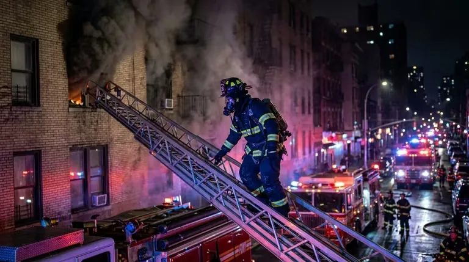
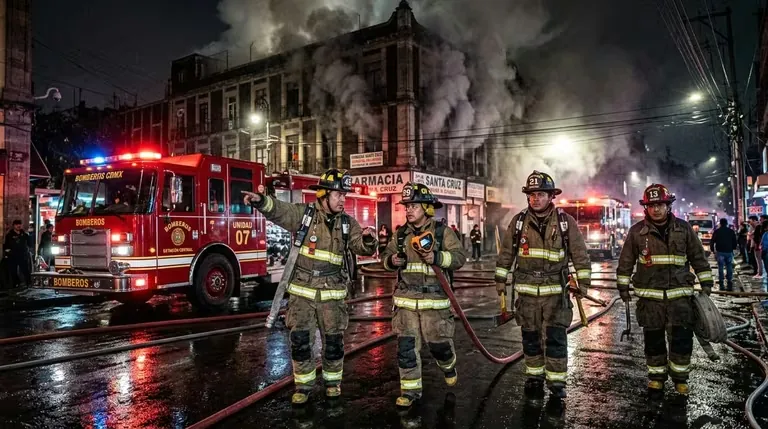

Equipar bien es una decisión de negocio, no un trámite
Si abres un local en Querétaro, tarde o temprano alguien de protección civil va a tocar la puerta. Y ahí se nota quién equipó "para cumplir" y quién equipó de verdad. Comprar el extintor más barato, pegar una señal genérica con cinta y dejarlo ahí parece suficiente hasta que llega la inspección —o peor, hasta que hay un conato de fuego. Entonces salen las omisiones: el extintor sin certificación que nadie puede verificar, la señal que no brilla cuando se va la luz, la ruta de evacuación que nunca se marcó, el botiquín que no existe.
Cualquiera de esas omisiones puede frenar tu apertura, costarte una sanción o, si llega a haber un siniestro, darle a la aseguradora la excusa que necesita para no pagar. Equipar bien no es un gasto que te imponen: es lo que te deja operar tranquilo. Y hoy es más fácil que nunca, porque ya no tienes que perseguir a cinco proveedores. La tienda en línea de LGA Contraincendios te deja armar el listado completo —extintores, señalización, detección, botiquín— con ficha técnica de cada producto y la documentación que el expediente necesita.
El Bajío es de las regiones que más crece en el país. Restaurantes, talleres, oficinas, plazas y bodegas se multiplican entre Querétaro, Guanajuato, San Luis Potosí y Aguascalientes, y todos cargan la misma obligación: un programa de protección civil con equipo suficiente, certificado y con papeles en regla. No importa si tu local es una cafetería de 80 m² o una bodega de 2,000: la lógica es la misma, solo cambia la escala.
Qué te va a pedir protección civil
Lo que revisa protección civil no sale de una sola norma, sino de la combinación de varias normas oficiales mexicanas y del reglamento local de tu municipio. Estas son las que conviene que conozcas antes de equipar, aunque sea por encima, para saber qué estás comprando y por qué:
- NOM-002-STPS: regula el uso de extintores en centros de trabajo — cuántos, de qué tipo, a qué altura, con qué señalización y mantenimiento documentado.
- NOM-154-SCFI: regula el extintor como producto. Sin esta certificación, el extintor no es válido ante protección civil.
- NOM-003-SEGOB: regula la señalización de protección civil y la señalética de emergencia (rutas, salidas, ubicación de equipo).
- NOM-026-STPS: colores y señales de seguridad e higiene en el centro de trabajo.
- Reglamento estatal y municipal de protección civil: en Querétaro y los municipios del corredor industrial, el dictamen de protección civil define el equipo mínimo según el giro y el aforo del establecimiento.
El inspector no revisa el extintor por un lado y la señal por otro: mira el conjunto. Le falta un eslabón a la cadena y la observación cae igual, tengas o no el resto. Por eso conviene equipar por bloques y palomear cada uno antes de que llegue la visita, en vez de improvisar el día anterior.
"Un extintor sin certificación, una señal que no brilla con el local a oscuras o una ruta de evacuación sin marcar: esas tres son las observaciones que más se repiten. Equipar por checklist es lo que evita que cualquiera de ellas te frene la apertura."
El checklist por bloques
La forma más fácil de no dejar huecos es pensar en cinco bloques. Cada uno corresponde a una parte del catálogo de LGA y a un requisito concreto que protección civil va a buscar:
| Bloque | Qué incluye | Norma de referencia | Aplica a |
|---|---|---|---|
| Extinción | Extintores por clase de fuego, gabinetes, mangueras | NOM-002-STPS · NOM-154-SCFI | Todo establecimiento |
| Señalización | Señales fotoluminiscentes de extintor, salida, ruta | NOM-003-SEGOB · NOM-026-STPS | Todo establecimiento |
| Detección y alarma | Detectores de humo/calor, alarmas, estaciones manuales | NFPA 72 · reglamento local | Oficinas, hoteles, plazas |
| Evacuación | Lámparas de emergencia, señalética de ruta, plano | NOM-003-SEGOB | Todo establecimiento |
| Primeros auxilios | Botiquín, camilla, DEA según aforo | NOM-005-STPS · reglamento local | Todo establecimiento |
En las secciones que siguen desglosamos cada bloque con el detalle que necesitas para armar el pedido sin adivinar.

Bloque 1 — Extintores: el primero que te van a revisar
El extintor es lo más básico y lo primero que mira el inspector. La NOM-002-STPS pide al menos un extintor por cada 300 m² de superficie y que desde cualquier punto del local nadie tenga que caminar más de 15 metros para alcanzar el más cercano. Pero el número es solo la mitad: el tipo importa tanto como la cantidad, porque depende del riesgo de cada zona. Piensa en tu local por áreas:
- Polvo ABC — oficinas, bodegas, comercios, áreas generales (cubre clases A, B y C)
- CO₂ — cuartos eléctricos, racks de servidores, salas de cómputo, áreas con electrónica
- Clase K — cocinas con freidora de inmersión o grasas calientes (restaurantes, comedores, hoteles)
- AFFF o espuma — talleres y áreas con solventes, pinturas y líquidos inflamables
- Gabinete contra incendios tipo II con manguera — pasillos y áreas comunes de plazas y edificios
Un ejemplo típico del Bajío: un restaurante mediano lleva polvo ABC en el comedor y la barra, clase K junto a la freidora y un CO₂ en el cuarto del tablero eléctrico. Tres extintores, tres clases distintas, porque el fuego de aceite no se apaga igual que el de papel o el de un corto. Meter solo ABC "para todo" es justo el error que el inspector detecta a la primera.
Todos los extintores que vende LGA traen certificación NOM-154-SCFI verificable: el número del certificado y el organismo que lo emitió vienen impresos en la etiqueta, no es un sello inventado. Comprando en línea, la ficha de cada producto te dice el agente, la capacidad, las clases de fuego que cubre y ese número de certificación, así eliges el correcto para cada área sin jugar a las adivinanzas.
Caso de estudio del e-commerce técnico de LGA Contraincendios: catálogo, carrito B2B y conversión.
Bloque 2 — Señalización de protección civil
Si el extintor es la observación número uno, la señalización es la dos. Y aquí mucha gente se confía: cree que con tener "algo pegado" alcanza. No alcanza. Las señales tienen que ser fotoluminiscentes —es decir, que sigan brillando cuando se va la luz—, con el color y el pictograma que marca la NOM-003-SEGOB y la NOM-026-STPS, y colocadas a la altura y en el punto donde de verdad se ven. Una señal correcta pero escondida detrás de un anuncio cuenta como si no estuviera.
- Señal de ubicación de extintor (fondo rojo, pictograma del extintor)
- Señal de salida de emergencia (verde, con flecha direccional)
- Señal de ruta de evacuación (verde, flechas a lo largo del recorrido)
- Señal de punto de reunión (verde, exterior del inmueble)
- Señal de ubicación de botiquín y de hidrante donde aplique
- Señales prohibitivas y de advertencia (no fumar, riesgo eléctrico, etc.)
En el catálogo de LGA toda la señalética de emergencia es fotoluminiscente y conforme a norma, así te quitas de encima el error más común: la hoja impresa que se borra a la primera vez que se va la luz. Si quieres bajar al detalle —qué señal va dónde, qué dimensión según la distancia—, lo desarrollamos en el artículo hermano sobre señalización de protección civil y equipo de emergencia.
Bloque 3 — Detección y alarma
Para un comercio chico quizá no aplique, pero si tu negocio es una oficina con personal, un hotel, una plaza o cualquier lugar con gente entrando y saliendo, protección civil va a pedir detección y alarma. La diferencia con el extintor es clave: el extintor necesita que alguien lo agarre, la detección avisa sola. Esos segundos que ganas mientras todos siguen en lo suyo son los que ordenan una evacuación en lugar de una estampida.
- Detectores de humo: para áreas de oficina, pasillos y habitaciones. Tipo iónico o fotoeléctrico según el ambiente.
- Detectores de calor: para cocinas, cuartos de máquinas y zonas donde el humo o el polvo darían falsas alarmas.
- Estaciones manuales de alarma: botones de activación en rutas de salida.
- Alarmas audibles y visuales: sirenas y luces estroboscópicas para alertar a todo el inmueble.
Dónde y cuántos detectores van depende del plano del inmueble, igual que la arquitectura del panel. Si tu caso es sencillo —unos cuantos detectores y una sirena— los compras en línea y listo. Si el proyecto pide memoria de cálculo, LGA tiene un canal de atención técnica directa que se suma a la tienda, para que no te quedes con el sistema a medio diseñar.
Bloque 4 — Rutas de evacuación y equipo de emergencia
Una ruta de evacuación no es una flecha en la pared y ya. Tiene que funcionar con el local a oscuras, que es justo el escenario de un incendio cuando salta el corto y se va la luz. Por eso el inspector revisa que haya lámparas de emergencia autónomas: equipos con batería que se prenden solos al cortarse la energía e iluminan todo el recorrido hasta la calle. De nada sirve la flecha si nadie la ve.
- Lámparas de emergencia con batería de respaldo en pasillos, escaleras y salidas
- Señalética de ruta de evacuación fotoluminiscente continua
- Plano de evacuación visible en cada nivel o área
- Salidas de emergencia despejadas, señalizadas e iluminadas
- Punto de reunión marcado en el exterior
Las lámparas, la señalética de ruta y el resto del equipo de evacuación están en el mismo catálogo de LGA, así que este bloque cae en el mismo pedido que los extintores y la señalización. Una sola compra, un solo envío, un solo expediente.
Bloque 5 — Botiquín y primeros auxilios
El último bloque es el que más se olvida: la atención de primeros auxilios. La NOM-005-STPS y el reglamento local piden que tengas un botiquín equipado y, según cuánta gente cabe en tu local y a qué te dedicas, camilla rígida e incluso desfibrilador externo automático (DEA/DAE). No es lo mismo una papelería que una nave con 200 trabajadores.
- Botiquín básico: para negocios pequeños — gasas, vendas, antisépticos, guantes, tijeras.
- Botiquín intermedio o industrial: para plantas y centros de mayor aforo, con material para atención de cortes, quemaduras y fracturas.
- Camilla rígida y collarín: para inmovilización y traslado en emergencias.
- DEA (DAE): recomendado o exigido en centros de gran afluencia.
Meter el botiquín en la misma compra del equipo contra incendios te ahorra el dolor de cabeza de buscar otro proveedor: todo el programa de protección civil sale de una sola tienda, con una sola factura.
Cómo armar todo el pedido en línea
La tienda de LGA Contraincendios está pensada justo para este caso: equipar un negocio completo de una sentada, sin saltar entre proveedores. El recorrido es directo:
| Paso | Acción | Resultado |
|---|---|---|
| 1. Diagnóstico | Identifica áreas, metraje y riesgos por zona | Lista de clases de fuego y bloques aplicables |
| 2. Selección | Filtra por tipo de área en el catálogo de LGA | Productos recomendados por bloque |
| 3. Carrito | Agrega extintores, señalización, detección, botiquín | Pedido único con todos los bloques |
| 4. Entrega | Recolección en Querétaro o envío a domicilio | Equipo en sitio, embalado y certificado |
| 5. Documentación | Factura CFDI, certificados NOM, fichas técnicas | Expediente listo para protección civil |
Si estás en Querétaro y tienes con qué transportar, pasas a recoger al almacén de LGA y te ahorras el envío. Si estás en León, San Luis, Aguascalientes o del otro lado del país, LGA lo manda con paquetería que sabe mover equipo de seguridad. En los dos casos, los papeles que vienen con el pedido son los mismos que vas a poner sobre la mesa frente a protección civil y a la aseguradora. Sin trámites extra de tu parte.
Los errores que más cuestan
Estos son los tropiezos que LGA ve una y otra vez en negocios del Bajío. Ninguno es caro de evitar; todos son caros de arrastrar hasta la inspección:
- Comprar el extintor más barato sin certificación verificable. No protege legalmente y no pasa la inspección.
- Usar señalización de papel impreso. No es fotoluminiscente; no cumple NOM-003-SEGOB.
- Olvidar el extintor clase K en la cocina. Un polvo ABC no sustituye al clase K en freidoras.
- No tener lámparas de emergencia. La ruta de evacuación debe funcionar a oscuras.
- Equipar a medias y dejar bloques sin cubrir. La inspección evalúa el sistema completo.
- No conservar la documentación. Sin certificados ni facturas, el equipo no acredita cumplimiento.
Equipar es el arranque, no la meta
El día que terminas de equipar arranca otro ciclo: el mantenimiento. Los extintores piden inspección visual mensual —eso lo haces tú o tu encargado—, mantenimiento anual por técnico certificado y prueba hidrostática cada cierto tiempo según el tipo. A las lámparas hay que probarles la batería, a los botiquines reponerles lo que se usa o caduca, y a la señalización mantenerla legible y en su sitio. Equipo que se compró y se olvidó es equipo que falla cuando hace falta.
Si manejas varios extintores —una planta, una plaza, un corporativo— perseguir cada vencimiento por separado es un infierno. LGA ofrece contratos de mantenimiento que juntan toda tu flota en una visita coordinada y te dejan el reporte documentado para el expediente. Llegas a la siguiente inspección sin sorpresas y sin haber tenido que llevar la cuenta tú mismo.
Equipa tu negocio con LGA Contraincendios
México
Preguntas frecuentes
¿Cuántos extintores necesita mi negocio en Querétaro?
La NOM-002-STPS pide al menos un extintor por cada 300 m² y que desde cualquier punto el recorrido al más cercano no pase de 15 metros. El tipo depende del riesgo: polvo ABC en zonas generales, clase K en cocinas con freidora y CO₂ en cuartos eléctricos. Así que el número final sale de tu metraje y de cuántas áreas de riesgo distinto tengas.
¿Qué extintor va en la cocina de un restaurante?
Un extintor clase K, hecho para fuegos de aceites y grasas. Un polvo ABC no lo reemplaza: sobre aceite ardiendo el ABC puede reavivar las llamas en lugar de apagarlas. El clase K va cerca de la línea de cocción, a la mano del personal y sin estorbar la salida.
¿La señalización de papel sirve para pasar la inspección?
No. La NOM-003-SEGOB exige señalética fotoluminiscente, que sigue brillando cuando se va la luz. Una hoja impresa pegada con cinta no cumple y es de las observaciones más repetidas en las inspecciones del Bajío. Salir de eso cuesta poco; la observación cuesta mucho más.
¿Puedo comprar todo en línea y recibirlo en mi estado?
Sí. La tienda de LGA Contraincendios arma extintores, señalización, detección y botiquín en un solo pedido. Hay recolección en el almacén de Querétaro para clientes locales y envío a Guanajuato, San Luis Potosí, Aguascalientes y al resto de México con paquetería especializada.
¿Qué documentación necesito para protección civil?
Para tu expediente: la factura CFDI, el certificado NOM-154-SCFI de cada extintor y las fichas técnicas del equipo. LGA te entrega esos papeles con el pedido, así los presentas tal cual ante protección civil y la aseguradora, sin tener que pedirlos aparte.
¿Por qué comprar con LGA Contraincendios?
Equipar un negocio en Querétaro no tendría por qué obligarte a coordinar cinco proveedores —uno para extintores, otro para señales, otro para detección, y así. La tienda en línea de LGA Contraincendios cierra los cinco bloques en un solo lugar, con información técnica de verdad en cada producto y los papeles listos para protección civil.
- Catálogo integral: extintores de todas las clases, señalización fotoluminiscente, detección, lámparas de emergencia y botiquines en un solo lugar.
- Equipo certificado y verificable: NOM-154-SCFI en extintores, NOM-003-SEGOB en señalización, listado UL/FM en sistemas.
- Compra transparente en línea: ficha técnica por producto, sin intermediarios que distorsionen la información.
- Cobertura del Bajío y nacional: recolección en Querétaro o envío especializado a toda la república.
- Documentación lista: CFDI, certificados NOM y fichas técnicas para el expediente.
- Acompañamiento técnico: canal de atención directa para proyectos que requieren memoria de cálculo.
Arma el pedido de tu negocio en lgacontraincendios.com, o si lo tuyo es el lado web, mira cómo construimos su tienda en línea en el caso de estudio de LGA Contraincendios.